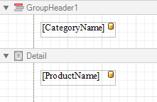
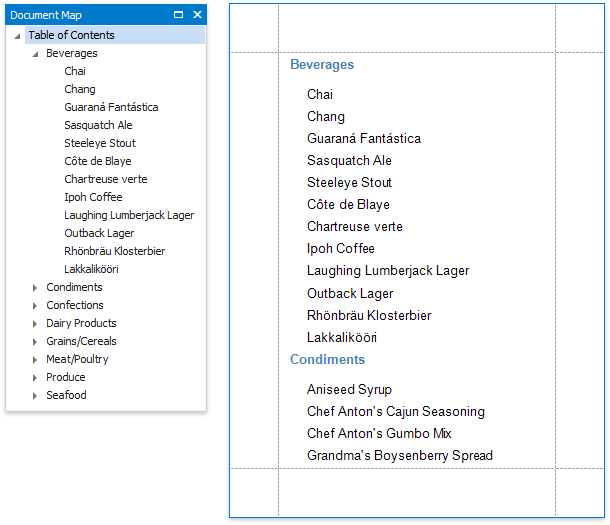
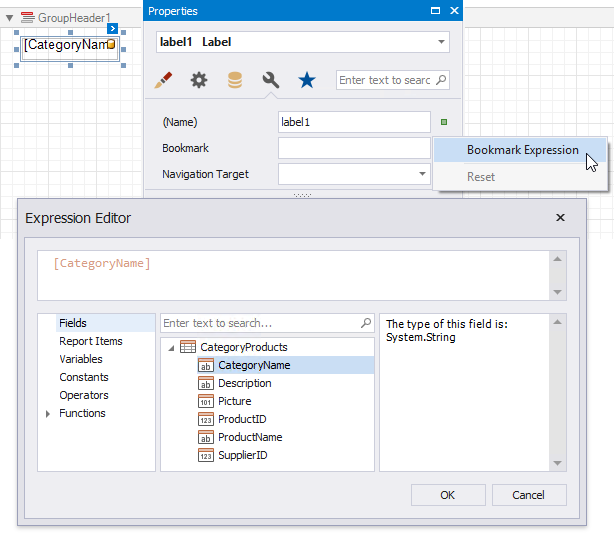
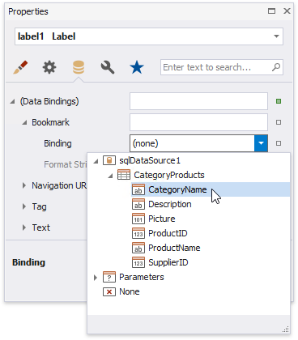
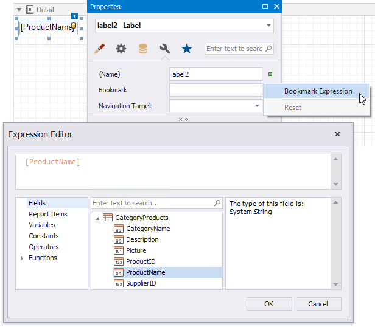
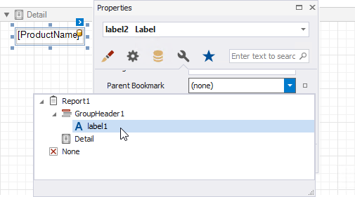
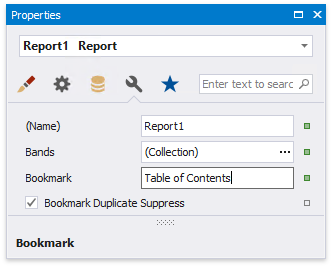

Add Bookmarks and a Document Map
This document describes how to use bookmarks for mapping the report elements' hierarchy to the Document Map that is displayed in a Print Preview, and speeds up the navigation through complex reports.
The example below is based on the following report:

This report displays products that are grouped by the CategoryName field.
The following image illustrates the resulting report with a hierarchical Document Map. Clicking any bookmark navigates the Print Preview to the document section containing the associated element.

Use the following steps to generate a Document Map in your grouped report:
Select the label placed in the Group Header band and switch to the Property Grid's Miscellaneous tab. Click the Bookmark property's marker and select the Bookmark Expression item. In the invoked Expression Editor, select the CategoryName data field.

In the legacy binding mode (if the Property Grid does not provide the Bookmark Expression item), you can specify this property in the Property Grid's Data Bindings category.

In the same way, select the label in the Detail band and bind its Bookmark property to the ProductName data field.

Most of the reporting controls (for example, Table, TableCell, CheckBox, etc.) supports the Bookmark property.
Set the same label's Parent Bookmark property to the label in the group band. This arranges bookmarks into a parent-child structure reflecting the report elements' hierarchy in the Document Map.

Note
Avoid cyclic bookmarks that occur when you assign two bookmarks as parents to each other. In this scenario, an exception raises when you attempt to create the report document.
Select the report itself and assign text to its Bookmark property to determine the root node's caption in the Document Map.

The root bookmark displays the report name if you do not specify this property.
Note
Duplicated bookmarks are suppressed to prevent adding multiple bookmarks with the same name to a final document. You can disable the report's Bookmark Duplicate Suppress property to allow duplicated bookmarks.